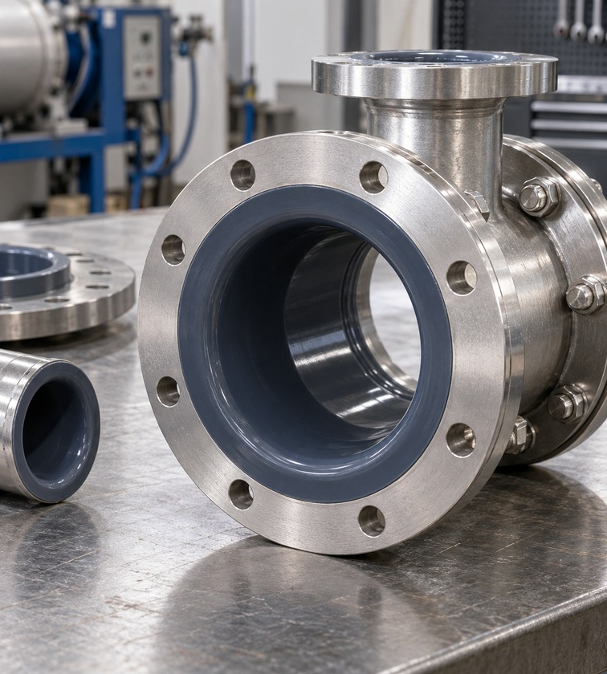
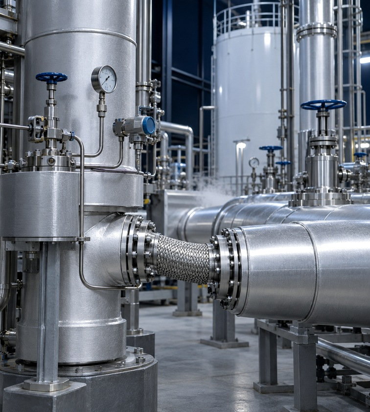
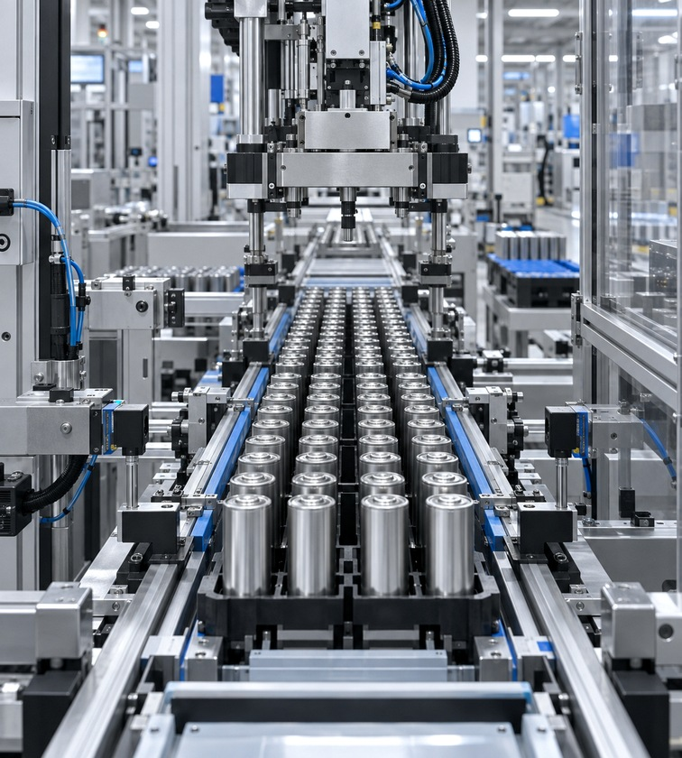
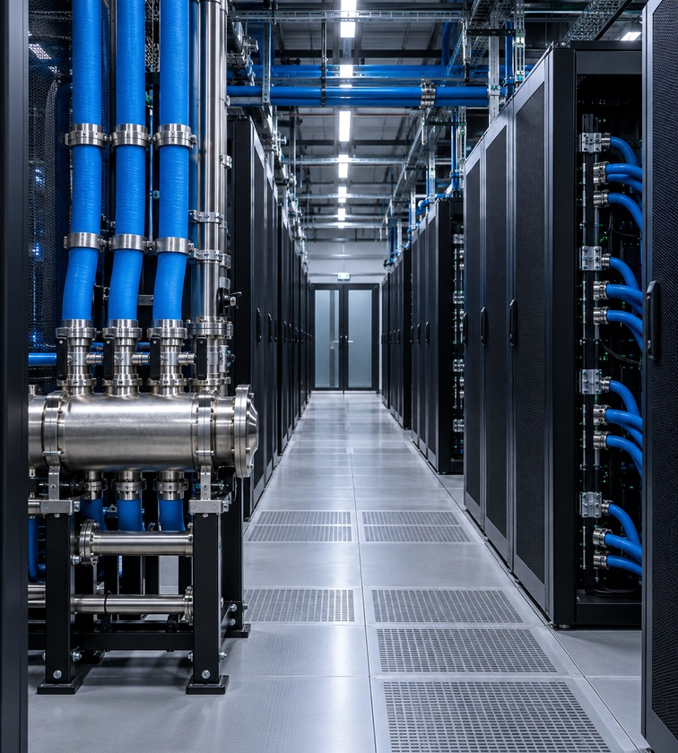
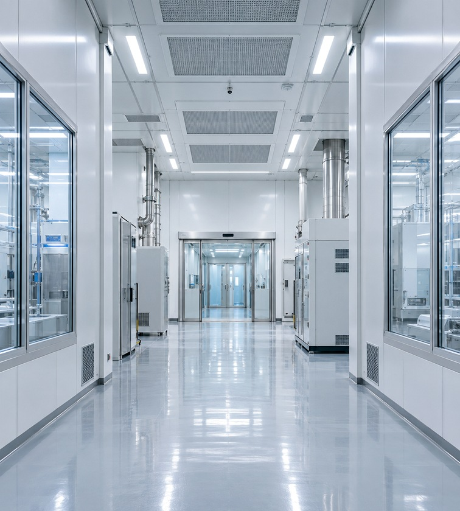

열유입을 줄이는 진공단열 시스템
단열 구조와 진공 성능을 관리해 기화 손실을 줄이고 안정적인 유체 이송 조건을 유지합니다.
- 액화가스와 저온 냉매의 온도·압력·유량 조건을 기준으로 배관 규격 선정
- 온도 변화에 따른 수축량을 계산해 지지구조와 신축 구간 계획
- 밸브와 계측기의 저온 적합성 및 조작·점검 공간 확인



극저온 유체를 안전하게 이송하는 진공단열 시스템을 구축합니다. FLOVEX는 공정 분석과 디지털 설계, 제작, 시공, 유지보수를 하나의 책임 있는 체계로 연결합니다.
초저온 유체의 특성과 열수축을 고려해 배관, 지지구조, 밸브와 계측 구성을 설계합니다.
단열 구조와 진공 성능을 관리해 기화 손실을 줄이고 안정적인 유체 이송 조건을 유지합니다.

용접과 비파괴검사, 기밀시험, 진공도 확인을 거쳐 설치 품질과 운전 안전성을 점검합니다.

반도체와 정밀 제조설비의 챔버·칠러에 필요한 저온 냉매를 안정적으로 공급하도록 유량과 압력 조건, 분배계통과 회수 경로를 함께 설계합니다.

냉각과 승온이 반복되는 운전 조건에서 접합부와 지지구조에 집중되는 응력을 검토하고 결로, 진동, 누설 위험을 줄이는 상세를 적용합니다.
